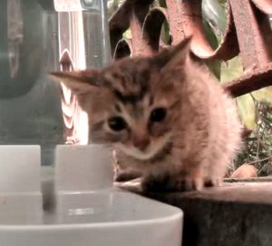
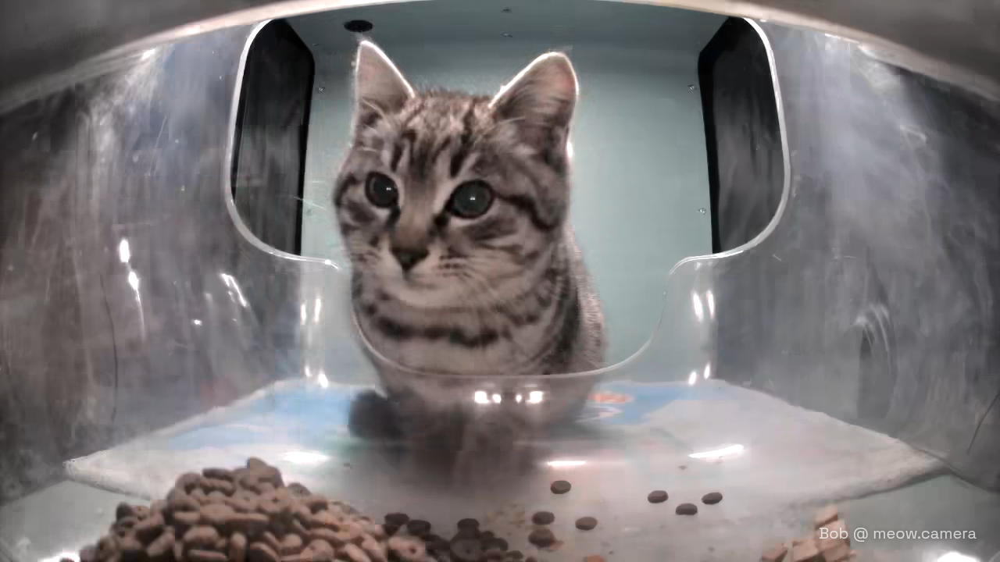
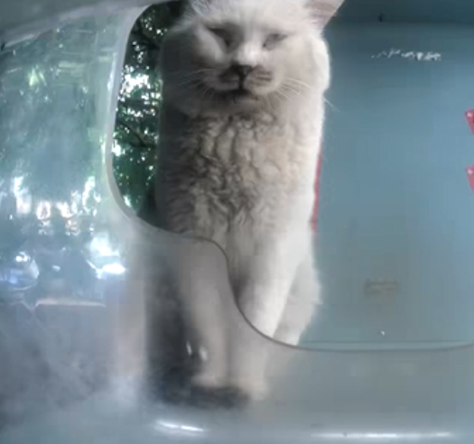
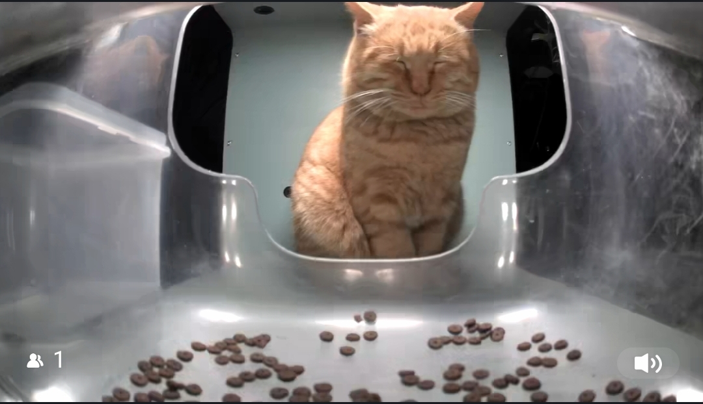
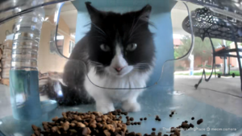
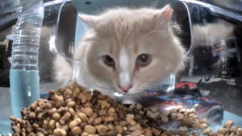
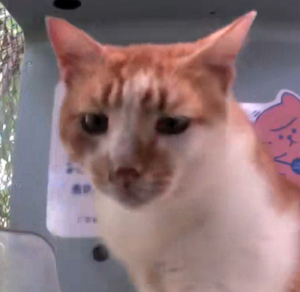

Asparagus
Asparagus is a small brown tabby kitten who decided to light up our lives mid-2024. They can be found at the Lucky 7-Eleven Ⅱ feeder. Asparagus had their name chosen by the community, as it apparently suited them.
Behaviour
Asparagus is a friendly little guy. They usually are sleeping in the Lucky 7-Eleven Ⅱ feeder, most commonly next to the water bowl. When they do, another cat might come along, which Asparagus doesn't mind. For such a small baby, they sure have a kind heart.
Apollo
Apollo is a kitten that appears at A Litter of Cats Who Love Each Other. Apollo is noted for being a very beautiful and normal-looking cat, especially compared to the many interesting-looking cats that visit the feeder. Apollo was named after the Greek god of the same name, who is stated by some sources to be the most beautiful Greek god.
Behavior
Apollo is a fairly fearless cat. From his first appearance, he barely even flinched when food was dropped, something that sends most other new kittens flying out of the feeder. He is very patient, willing to sit in front of the feeder for long periods of time to wait for food. When other cats approach him, he is not afraid to hiss at them. While Apollo is assertive, he does not initiate active conflict with other cats, only getting aggressive when provoked. He prefers to assert himself with his mere presence.
Big boss
Big Boss is the frequent visitor of Woohoo Big Face Baga Meow. You can often catch him having a snooze on the feeder in the evening. He's a well behaved lad that gets along with the other residents. He and Ms. Tangerine were even seen together at the very first sighting.
Behavior
Big Boss is very patient with the other cats. Even when he is the first to arrive, he will let the other cat eat first. When both chicken and kibble are donated, he will eat the kibble and leave treats behind for the next cat to enjoy. He spends the evenings taking a nap at the feeder.
Generic ginger cat
Generic Ginger Cat is a generic looking cat that attends the Cuties' Longing feeder. He was named after being an orange tabby, which is incredibly common.
Behavior
Generic Ginger Cat is a cat that will usually enter the feeder to sleep. He will almost never eat kibble, or sleep in other positions than the "Meditation" one; though it is possible. When other cats show up, GGC will not hit or hiss, he rather just sits in his regular position and watches.
Christina
Christina is a cat at The Feline Relaxing Place. Like the other cats at the feeder, she was named by the Caretaker. According to the Caretaker, Christina came from a Home Depot pallet with her kittens. She is one of the more common visitors to the feeder.
Behavior
Christina was noted by the Caretaker to be a shy cat. Among other cats, Christina does show some level of assertiveness, such as when she shooed Bryce out of the feeder. Otherwise, she does act pretty demure, moving slowly (but not fearfully) and staring with a wide-eyed, nervous-looking expression. When food is dropped, she runs out of the feeder. She will normally return to the feeder after a few seconds, but if food has been dropped too many times during her visit, she'll walk away.
Bryce
Bryce is a cat at The Feline Relaxing Place. Like the feeder's other cats, he was named by the caretaker. According to the caretaker, he is one of the youngest cats at the feeder and has a twin brother named Zion. He is one of the more common visitors to the feeder
Behavior
Bryce is a frequent visitor to the feeder. He enjoys chowing down on kibble as well as hanging out. He has a twin brother named Zion, and they are often seen together. Of the two, Bryce is more assertive, and Bryce has several times been seen eating while Zion watches. With other cats, Bryce isn't scared to stand up for himself when he wants to eat, but some cats, like TikTok, are able to intimidate him out of the feeder. He also isn't scared to hiss at the raccoons, although he is not able to shoo them away.
Fat toad
Fat Toad is one of the many interesting cats found at the Team BingBing Helps Stray Cats Find Their Forever Home feeder groups. Named after his strikingly large and big-bodied figure that resembles the resting position of a toad, he is confirmed to be the fattest cat within the BingBing compound.
Behavior
All this cat does is eat. The only thing he's been seen doing is begging for food and eating said food. It doesn't help that his figure asserts that he is simply all fat.
On the rare occasion, he can be seen sleeping.